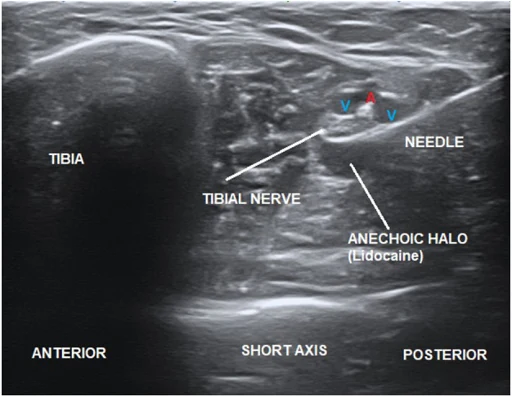

Il nervo tibiale passa dietro il malleolo interno dentro un canale delimitato da un legamento, e da lì si distribuisce alla pianta del piede. Quando in quel passaggio viene compresso, compaiono bruciore, formicolio e intorpidimento sotto il piede.
È il corrispettivo alla caviglia della sindrome del tunnel carpale, ma molto meno frequente e molto più difficile da diagnosticare con certezza.
Come si manifesta
- Bruciore, formicolio o intorpidimento alla pianta del piede, a volte limitati a una parte di essa.
- Peggiora stando in piedi a lungo e camminando; spesso migliora con il riposo.
- In molte persone i disturbi si accentuano di notte.
- Percuotendo la zona dietro il malleolo interno si può evocare una scossa verso la pianta.
- A volte dolore che risale lungo la parte interna della gamba.
Nella maggior parte dei casi non si trova una causa precisa. Quando c'è, può trattarsi di un esito di trauma, di una formazione che occupa spazio nel canale — una cisti, un lipoma, vene varicose — o di una variante anatomica. Fra le condizioni che aumentano il rischio sono descritti il diabete, l'ipotiroidismo, alcune malattie infiammatorie sistemiche e l'insufficienza renale cronica.[1]
Quando preoccuparsi
Contatta il medico presto se
- compare una perdita di forza nel piede, o difficoltà a muovere le dita;
- senti o vedi una tumefazione dietro il malleolo interno;
- i disturbi sono comparsi dopo un trauma o una frattura della caviglia;
- i sintomi riguardano entrambi i piedi e si accompagnano ad altri disturbi generali: può trattarsi di una condizione diversa, che riguarda più nervi;
- hai il diabete e noti un cambiamento della sensibilità.
Cosa puoi fare tu
Fai
- Riduci per un periodo il tempo trascorso in piedi e i tragitti lunghi.
- Usa calzature stabili e ben ammortizzate.
- Annota in quali momenti della giornata e dopo quali attività i disturbi compaiono.
- Per la terapia farmacologica chiedi al medico.
Non fare
- Non dare per scontata la diagnosi: molte condizioni danno disturbi simili sotto il piede.
- Non affrettarti a fare esami diagnostici senza aver chiesto il parere del tuo medico.
Servono esami?
Qui gli esami servono, e per due motivi distinti.

Il primo è escludere le altre cause: una sofferenza dei nervi che parte dalla schiena, una polineuropatia, una fascite plantare, un intrappolamento di un nervo plantare. L'elettromiografia aiuta a localizzare il problema, pur con i limiti che ha in questa sede.
Il secondo è cercare una causa locale nel canale, perché quando c'è il trattamento cambia: l'ecografia e la risonanza possono mostrare una formazione che occupa spazio.[1]
È il medico specialista che valuta sulla base della visita quali esami servano.
Le cure, e quanto funzionano
Il percorso corrente parte dal trattamento conservativo, con la chirurgia riservata a chi non risponde e presenta le condizioni adatte.[1] Il trattamento conservativo comprende la modifica delle attività, le calzature e le ortesi, la terapia farmacologica e la fisioterapia.
Va però detto con franchezza come stanno le prove: in questa condizione la letteratura è scarsa e in buona parte basata su casistiche. La revisione che ha confrontato trattamento conservativo e chirurgico ha trovato solo tre lavori che riportano esiti dopo trattamento conservativo, con risultati giudicati accettabili per un trattamento di prima linea.[1]
Quando esiste una causa locale identificata, rimuoverla è il trattamento. Quando non si trova, la decisione è meno netta e va costruita sul singolo caso.
Quando serve lo specialista
Qui il passaggio è necessario più che altrove: serve a escludere le condizioni che danno gli stessi disturbi, a cercare una causa locale, e a evitare di trattare per mesi un problema che ha un'origine diversa.
E a discutere, numeri alla mano, quale trattamento sia più idoneo per la tua situazione, sapendo che in questa condizione i numeri sono pochi e la decisione pesa sul quadro clinico complessivo.
Da dove vengono queste informazioni
- Vij N, Kaley HN, Robinson CL, Issa PP, Kaye AD, Viswanath O, Urits I. Clinical results following conservative management of tarsal tunnel syndrome compared with surgical treatment: a systematic review. Orthop Rev (Pavia) 2022;14(3):37539. doi:10.52965/001c.37539
Su questa condizione non esistono studi randomizzati di confronto fra trattamento conservativo e chirurgico. La revisione citata raccoglie casistiche e studi osservazionali, ed è il motivo per cui qui si trovano meno numeri che in altre schede.
Scheda aggiornata il 9 novembre 2026. Prossima revisione prevista entro novembre 2028.